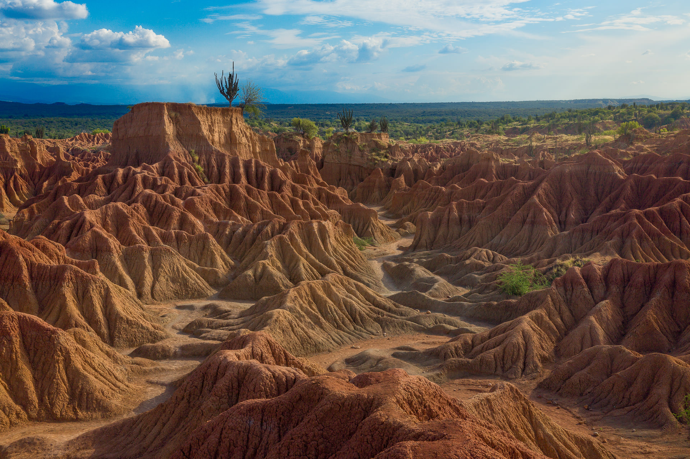

El Desierto de la Tatacoa es uno de los destinos naturales más impresionantes de Colombia. Se encuentra ubicado en el departamento del Huila y es considerado el segundo bosque seco tropical más grande del país, después de la isla de La Guajira.
A pesar de su nombre, no es un desierto completamente árido, sino una zona de bosque seco con formaciones rocosas erosionadas por el viento y el agua durante millones de años. Sus paisajes se caracterizan por tonos rojizos, ocres y grises que crean un escenario único y espectacular.
El desierto está ubicado cerca del municipio de Villavieja, en el departamento del Huila, Colombia. Es un lugar de fácil acceso desde ciudades como Neiva, lo que lo convierte en un destino turístico muy visitado.
El Desierto de la Tatacoa es un lugar ideal para el turismo de aventura, la fotografía y la exploración natural. Los visitantes pueden realizar caminatas por senderos naturales, recorrer sus laberintos de tierra erosionada y disfrutar de sus paisajes únicos.
Una de las actividades más populares es la observación astronómica, ya que el desierto cuenta con uno de los cielos más despejados de Colombia, ideal para ver estrellas, planetas y lluvias de meteoros.
El Desierto de la Tatacoa también es un lugar de gran interés para científicos y geólogos debido a sus formaciones fósiles y su historia geológica. Se han encontrado restos de animales prehistóricos, lo que demuestra que esta región tuvo un pasado muy diferente al actual.
El Desierto de la Tatacoa es un destino turístico único en Colombia que combina naturaleza, ciencia y aventura. Sus paisajes surrealistas y su cielo estrellado lo convierten en un lugar inolvidable para quienes lo visitan.
